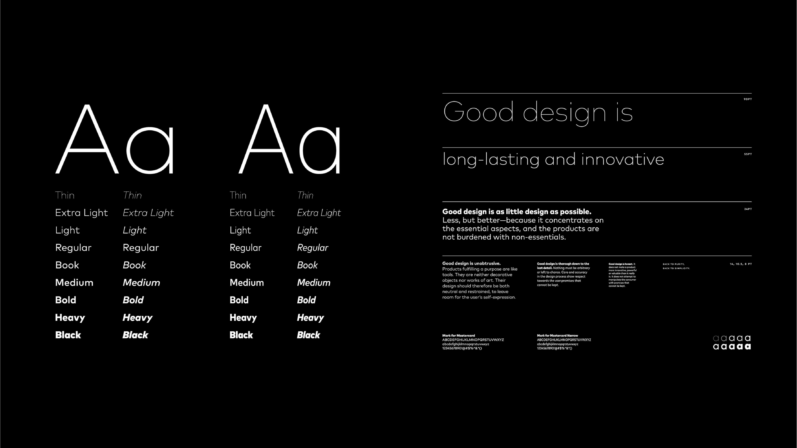
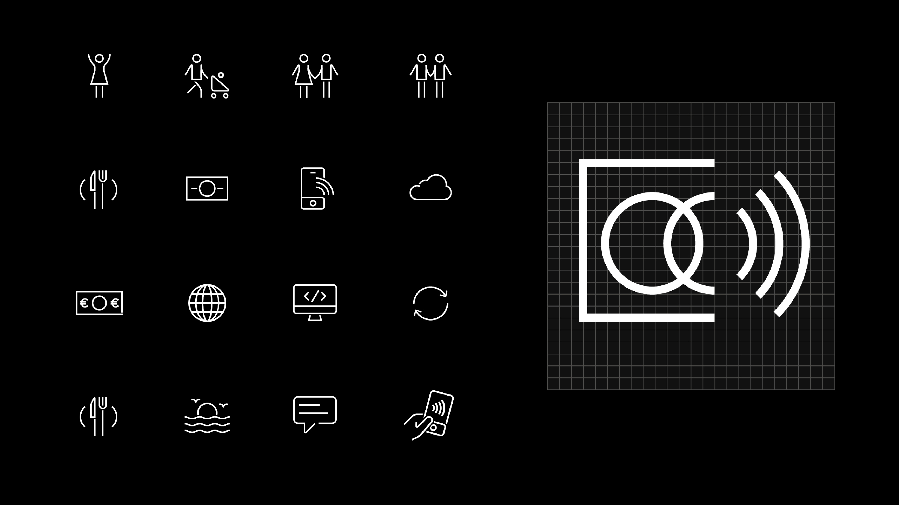
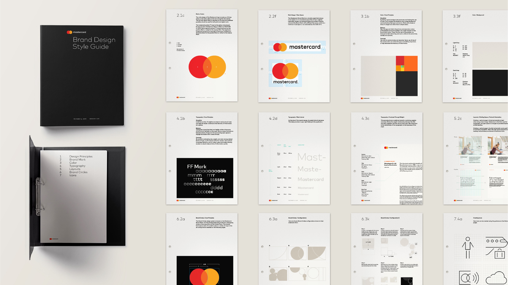
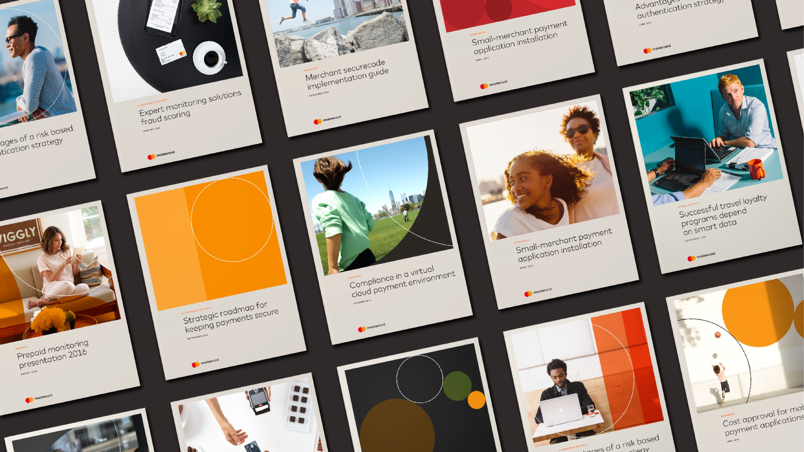

Mastercard
Mastercard is an American multinational corporation specializing in payment card services. As digital technology becomes an increasingly important part of Mastercard’s business, the company needed a brand identity that positions it as a forward thinking, people centered technology leader.
The new identity had to communicate simplicity and modernity while preserving Mastercard’s heritage and brand equity. To achieve this, a refined visual identity and design system was developed including brand guidelines and collateral that evoke cutting-edge technology and clean aesthetics, while retaining the core characteristics that make the brand globally recognizable.



